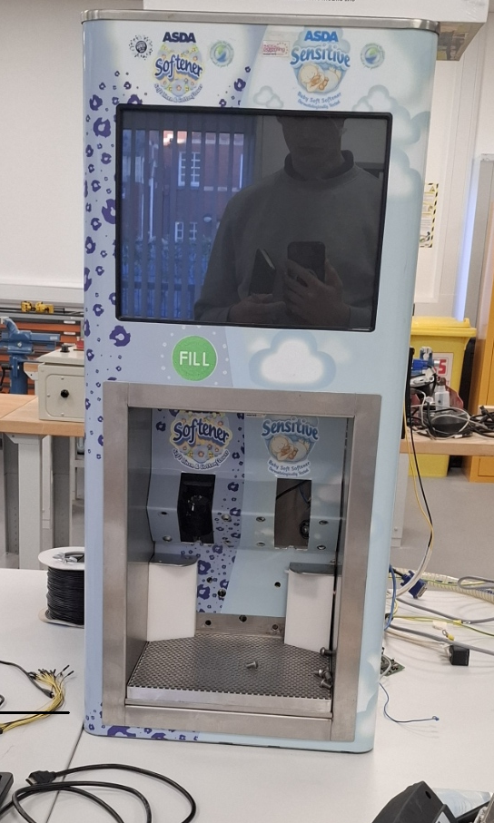
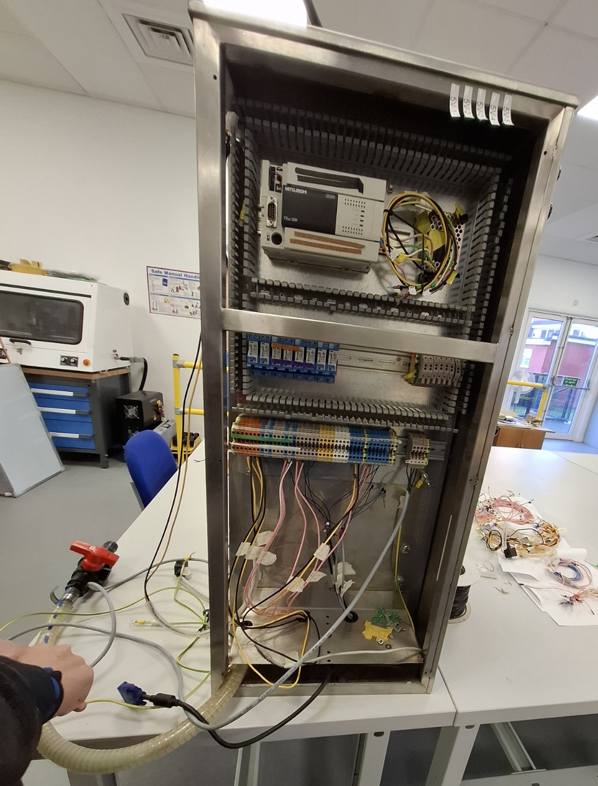

In this module, I learnt about the basics of analogue and digital circuits including:
For the team assesment, we had to produce a prototype solution for a fluid dispensing unit which would solve the problems raised in the client presentation. We got to pick teams of six to work on the project and my main role within my team was to handle the integration of the electronics as well as considering the user experience/interaction. This meant i was responsible for the design of the case.
For the system, we wanted to have a selection of inputs from a spring bottle slot size for the filling bottle. This would therefore mean that only bottles of the correct sizes could be placed into the machine.

